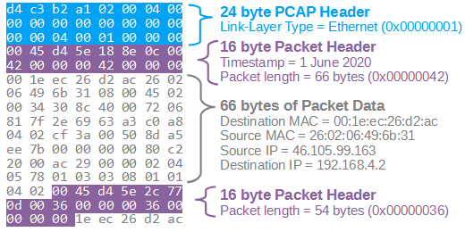

1. What is a PCAP?
PCAP (Packet Capture) is a file format that stores network traffic. Unlike a log — which is a summary — a PCAP is a recording of every single bit and byte that traveled across the wire. Packet capturing is used to analyse networks, identify performance issues, and manage network traffic. For a SOC, it allows teams to detect intrusion attempts, security issues, network misuse, packet loss, and congestion.

What PCAP Shows
Full Conversation
Every packet of the TCP exchange — SYN, SYN-ACK, ACK and every byte that follows.
Unencrypted Payloads
For protocols like HTTP or DNS, you can read the actual text — URLs visited and form data entered.
Network Metadata
Exact packet timing (down to the microsecond), packet sizes, and the specific ports used.
File Signatures
You can see the MZ header of an executable or the PK header of a Zip file in flight.
What PCAP Does Not Show
Even though PCAP is the gold standard, it has blind spots that must be filled by Endpoint logs (Sysmon / EDR) and Identity logs. PCAP provides the "what," but often lacks the "how" or "why."
Encryption — The "Locked Box"
PCAP shows the connection (Who/Whom) but not the payload inside. Solution:
use SSLKEYLOGFILE decryption or check decrypted server-side
logs.
Process Context — The "Invisible Actor"
PCAP identifies the machine, but not the program (Chrome vs malware.exe). Solution: correlate with EDR/Sysmon
to get the PID.
User Intent — The "Why"
PCAP records the action, not the justification. A 5GB transfer could be a backup or a data breach. Solution: cross-reference Identity/HR logs.
| PCAP Shows... | But it doesn't show... | So you need to check... |
|---|---|---|
| IP addresses & Ports | Which App/Process used them | Endpoint Logs (EDR / Sysmon) |
| Encrypted Handshake | The actual data inside | SSLKEYLOGFILE or Server Logs |
| Data being sent | The user's intent or permission | Identity / Active Directory Logs |
2. The Anatomy of a TCP Conversation
In SOC analysis, we differentiate between the Network Connection (TCP) and the Secure Session (TLS). A successful connection requires both to succeed.

A. The TCP 3-Way Handshake — The "Physical" Connection
Before any data moves, the client and server must synchronise. This is the foundation layer.
Synchronize
The client requests a connection to the server.
SYN-ACK — Synchronize-Acknowledge
The server confirms it is open and ready to accept the connection.
Acknowledge
The client confirms receipt. The "pipe" is now open and ready to carry data.
B. The TLS Handshake — The "Secure" Encryption
Once the TCP connection is established, the TLS handshake begins inside that pipe to negotiate encryption.
Client Hello
Client sends its list of supported encryption methods (Cipher Suites) to the server.
Server Hello
Server chooses a cipher suite from the list and sends back its Digital Certificate.
Key Exchange
Both parties exchange "secrets" used to encrypt the remainder of the conversation.
C. Connection Termination & Forensic Flags
TCP flags tell the story of how a conversation ended. In forensics, these indicators matter:
Pro-Tip — Reading Failed Connections
If you see a SYN followed by an RST, the connection was refused — the port is closed. If you see SYN followed by nothing, the packet was most likely dropped by a firewall or the server is offline.
3. Deep Dive: C2 Beaconing Patterns
Beaconing is the "heartbeat" of malware. It tells the attacker that the infected machine is still alive and ready to receive orders. Mature C2 frameworks go to great lengths to hide this heartbeat inside traffic that looks normal on the wire.
Lab 1 — JSON Beacon Payload Breakdown
When following the TCP stream in Wireshark, a JSON object was visible. Here is the forensic breakdown of each field:
"task": "idle"
The malware is in a "waiting" state. If this changed to "cmd": "whoami", you would know the attacker is actively
hands-on-keyboard.
"jitter": 5
An evasion technique. Without jitter, a beacon every exactly 300s creates a visible heartbeat on a graph. Jitter makes the traffic look like noisy, human-driven activity.
"pad": "AAAA..."
Ensures every packet is the same size. Many IDS systems look for "small, frequent packets" as a sign of C2 — padding makes the traffic blend in with standard web activity.
Key Takeaways
- PCAP is the gold standard of network evidence — but only for the "what," not the "how" or "why."
- Encryption, process context, and user intent are the three blind spots every PCAP analysis must fill from other log sources.
- A successful connection = successful TCP 3-way handshake + successful TLS handshake. Know which layer failed when troubleshooting.
- SYN → RST means refused; SYN → nothing means firewall drop or dead host.
- C2 beacons are defined by regularity — jitter and padding exist specifically to defeat that signature.
- Always correlate suspicious network flows with EDR and identity logs before reaching a verdict.